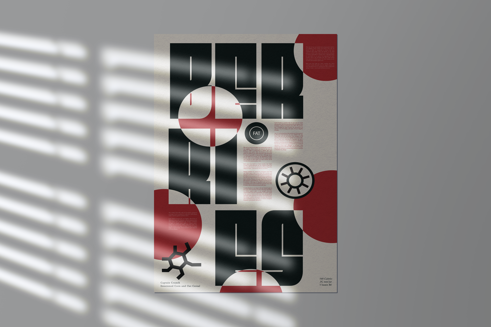
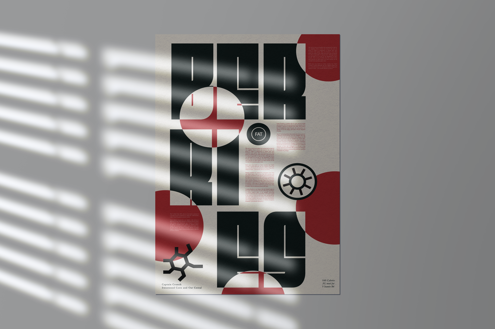

Skills
Collaboration/Teamwork
I thrive in collaborative environments, working closely with other team members to bring ideas to life. I value open communication and feedback, ensuring that projects align with both user needs and business goals.
Adobe Suite
I have been using the Adobe Suite to create high-quality visuals, branding materials, and digital assets. I am proficient in Adobe Illustrator, InDesign, Photoshop and more...
Problem Solving
I enjoy finding creative solutions to design challenges. Whether it's improving a layout or making a website easier to use, I focus on making designs both functional and user-friendly.
Figma
Figma is my go-to tool for web design, wireframing, and prototyping. I have been using it to create intuitive interfaces, collaborate in real time, and make quick changes based on feedback, ensuring seamless design workflows.
My Work


 



General FAQ's
When will you be graduating from SDSU?
I will be graduating from San Diego State University in May 2025.
What do you have planned for after graduation?
After graduation, I plan to continue working in design, focusing on UI/UX and digital experiences. I'm excited to explore opportunities that allow me to apply my skills in user-centered design while growing as a creative professional.
What was your favorite class you took at SDSU?
My favorite class was my UI/UX course, where I learned to design with accessibility, functionality, and user experience in mind. It solidified my interest in creating intuitive and engaging digital interfaces.
What work are you most proud producing at SDSU?
I'm most proud of my Athletic Retail app project. It was a collaborative experience that deepened my understanding of UI/UX principles and taught me how to work effectively with a partner to bring a concept to life.